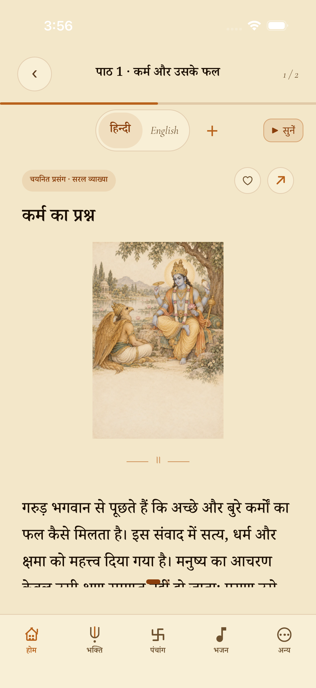
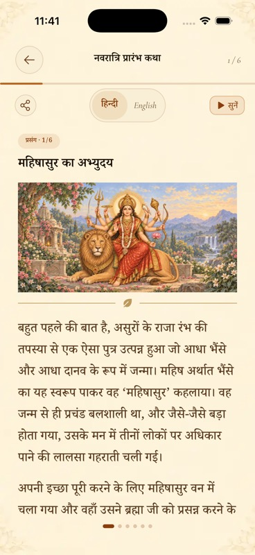
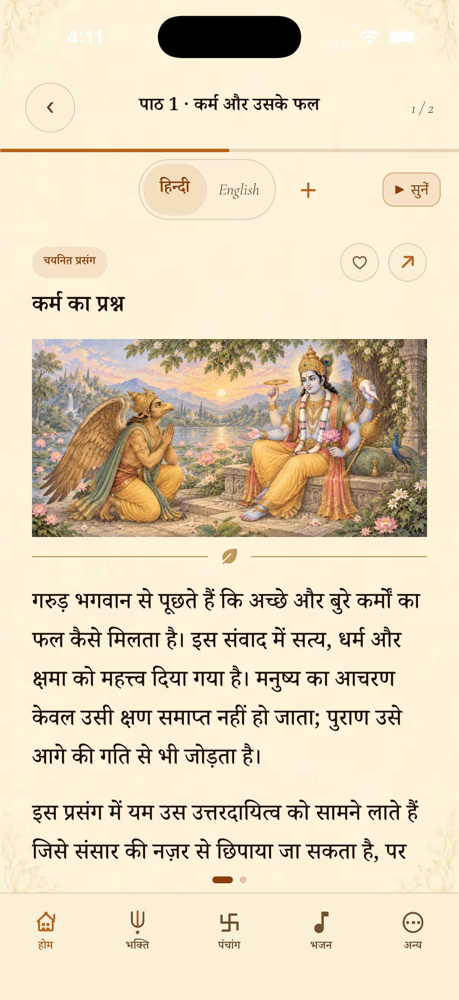
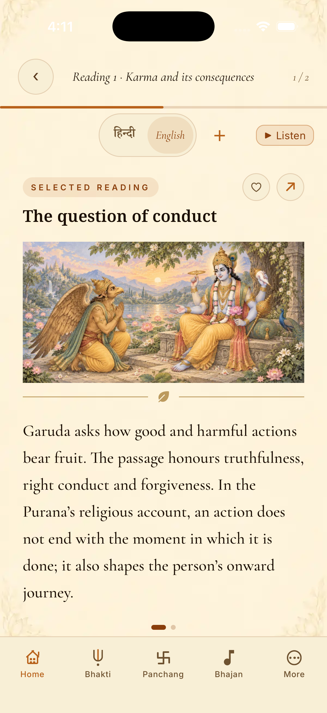
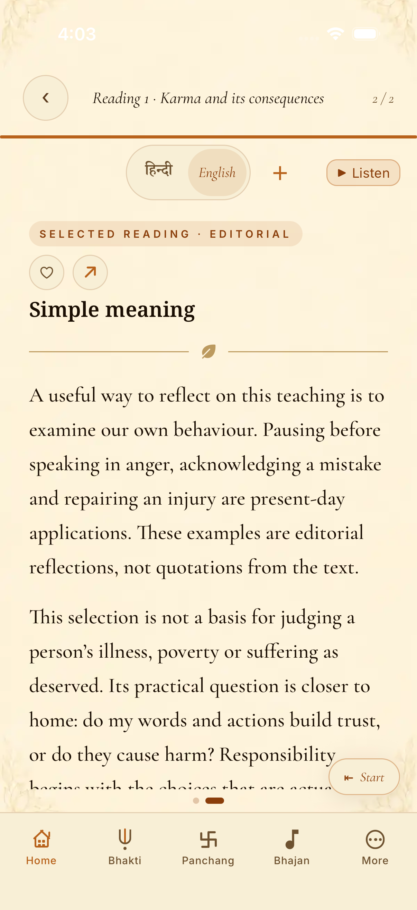
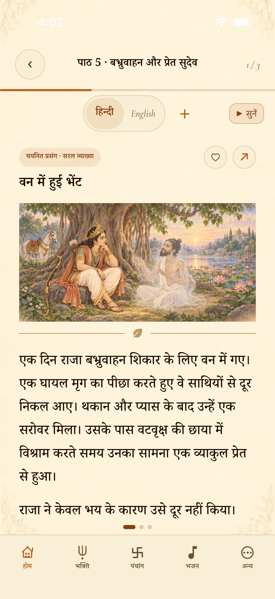

VEDANSH · NATIVE DESIGN REVIEW
Garud Puran, aligned with the current reader
Complete landscape scenes in the approved storybook style. Quiet paper, a compact leaf divider and text-first continuation pages. These are actual iOS captures; the middle reference is from merged PR #449.
1 · Before — replaced
Portrait inset, blank lower band, excess spacing.
2 · Current app reference — PR #449
Wide complete artwork and compact prose layout.
3 · Garud Puran — revised
Same visual treatment, source-checked content retained.
Reading and navigation
English opening
Continuation — no reserved art space
Babhruvahana and Sudeva
Nine revised illustrations
960 × 480 WebP · full canvas shown · no blank caption bands · about 1.30 MB combined.
Read all 12 selections in Hindi or English · Design and verification notes